Shopify Editions Spring ’26 拆解：CMS 下发 13 份场景预设与 13 份 Theatre 状态，前端只是解释器。
Editions 是 Shopify 半年一届的产品发布会站点，每届自建一个世界观。上一届 Winter ’26 是「文艺复兴」，这届的关键词只有一个：Everywhere。
十章对应十条产品线（Agentic、Sidekick、Online、Retail、Marketing、Operations、Shop app、Payments、Finance、Developer），CMS 计 219 张产品卡——HTML 里 <article> 正则计数 219，loaderData 里 24 个 products 数组求和也是 219，两路独立复算一致。宣传口径写「150+ updates」，而 shopInfo 的 description 里还留着上一版的「100+ updates」。三个数字并存，本拆解全部保留，不混用。
densityFill 后再画一遍带抖动的副本，各章渲染上限落在 16.1 万到 62.9 万之间。树林、拱廊、地球、门店——像修拉的点彩画被搬进三维。「无处不在」被翻译成「由无数点组成」。#090909 与白的透明度阶梯，所有彩色都在点云与产品图里。| 结论 | 依据 | 级别 |
|---|---|---|
| Hydrogen（React Router v7）+ Oxygen 边缘托管 | 响应头 powered-by: Shopify, Oxygen, Hydrogen；window.__reactRouterContext；后端店铺 editions-spring-2026.myshopify.com | 实锤 |
| Vite + rolldown 打包，React 19 | rolldown-runtime chunk、__vite__mapDeps | 实锤 |
| Tailwind CSS v4.3.3 | 样式表头注释 | 实锤 |
| three.js + react-three-fiber，Theatre.js 编排 | three.core（371,210 B）、r3f chunk、13 份 *-prod-*.json sheet 状态 | 实锤 |
| Lenis 平滑滚动，仅桌面细指针 | 路由 chunk new Fi({duration:1, easing:1.001−2^(−10t), smoothWheel:true, wheelMultiplier:1}) 与三条守卫 | 实锤 |
| zustand 状态；detect-gpu 分级；KTX2 loader；Rive；View Transitions API | 对应 chunk 与 CSS ::view-transition-* | 实锤 |
| 自定义点云格式 MDPC-2 + Worker 解码 | SdfRegistry chunk 内联 worker 源码；本页装置一按同一算法真解码 | 实锤 |
| National 2 出自 Klim Type Foundry；ShopifyInter 为 Inter 的定制版 | 字族名与字形特征 | 推断 中高 |
x_mj-10-pointcloud 系列部分来自 AI 生成图像的三维化 | 文件名中的 mj 与编号形态 | 推断 中 |
词频：#fff 27、#090909 13、#000 10、#f4f4f4 与 #2a2a2a 与 #0062d3 各 4。#0094d5、#eaf4ff、#cdfed4、#fefdcd 各 2 次，属产品卡内嵌图形色，不是品牌色。主题切换用 data-color-mode：html 上是 dark，「Get notified」白卡局部 light，视频弹窗 dark。
text-box: trim-both cap alphabetic 与 text-wrap: pretty。| 字族 | 字重 | 文件字节 | 角色 |
|---|---|---|---|
| National2 | 400（ss01） | woff2 35,180 · ttf 44,860 | hero-t1、t1–t3 大标题、body 默认 |
| ShopifyInter | 400 | woff2 21,872 · ttf 21,848 | t4–t6 正文与卡片、hero-t2 |
| Inter Variable | 100–900 | woff2 67,188 | text-label-*、全局导航、搜索 |
落盘 6 个文件，但 Inter Variable 那支被两个前缀各存了一份（同一 hash），实为 5 个不同文件：3 个 woff2 + 2 个 ttf 兜底。日文以 :lang(ja) 切 NotoSansJP。
MDPC-2 是 Shopify 自造的格式，头里那行 encoder: mdpc-lab.quick.shopify.io 说明它出自内部工具链。它刻意只用 deflate——因为 DecompressionStream 是浏览器原生的，零依赖。
real-assets/pointcloud/forest-1024-v3-moretrees-256_2.mdpc（137,491 B），按原 worker 的算法解——读 4 字节头长与 JSON 头，四段 DecompressionStream('deflate') 解压，位置走 varint 增量 → 前缀和 → Morton 解交织 → 12 位反量化，颜色走 Y 全分辨率 + Cb/Cr 按 chromaSub 8 子采样 → YCbCr 转 RGB，最后把 65,536 个点交给 WebGL 画成 splat。上面六格是这次解码的真实读数。sphere 1 / box 2 / torus 3 / cylinder 4 / octahedron 5 / dodecahedron 6，每个带逆矩阵、强度、衰减、梯度与极性。hero 里那个把粒子推开的形状就是一个 torus——也就是 Everywhere 字环本人。此处沿 SDF 梯度做位移，取原站的四个参数为默认值；原站还叠了流体位移与呼吸抖动，本装置未加，以便只看环的作用。原站在这里留了一段注释解释为什么要除 uRenderScale：ps 是渲染目标像素，会随 renderScale 缩小，而片元里的最小尺寸剔除是屏幕阈值；不归一化的话，缩放动画进行时剔除会越收越紧，半透明的弱点会成片消失。片元丢弃阈值是投影小于 .55px。
| 环节 | 做法 |
|---|---|
| 尺寸 | uPointSize × mix(.6,1.6,rand⁴) × (1+.3(splat−1)) × 距离尺寸 × 流生命 × 不透明度 × densityFill 缩放 × DPR × 120/dist，上限 uMaxPointSize × renderScale |
| 位置扰动 | uRandomize、密度填充抖动、sin(t·.18 + rand·12)·.006 的呼吸、转场上浮 uTransitionYOffset × rand^pow |
| 流场 | curl 噪声漂移或 rise 上升；布局枚举九种（off / dots / xLines / yLines / zLines / floorGrid / sphere / ripple / spokes），但 13 份预设只用到 dots 与 off；另有传送带 |
| SDF 碰撞 | 最多 8 个形状，见装置二 |
| 流体位移 | 在视空间读 uFluidVelocity 纹理，× influence × .02 × 1/(1 + .3z) |
| 颜色 | 曝光 exp2(uExposure)、九段选择性 HSL 校色、锚点辉光（8 个位置，四次方衰减）、可选焦散 |
13 份预设由 CMS 下发，每份给相机、环境、点云、流场、流体、焦散、校色、后处理、体积光。下表是逐份读出的原值，可点表头排序。注意点云的复用：Finance、Marketing、Payments、Developer、merch 五章共用同一个通用点云 minipointcloud，靠 pointSize、flow 与后处理拉开差别；另有 5 份在 512 与 256 两个槽位填的是同一个文件，即实际只有一档。
| 章 | fov | pointSize | maxPointSize | maxPoints | HDR | 点云源 | flow | curl | pressure | splatR | bloom |
|---|
curl 30 · dissipation .97/.98 · pressure .8 · simSize 128 · dyeSize 256 · pressureIterations 10，但 13 份预设全部覆写。逐份取极值后的真实区间：curl 1.5–6、velocityDissipation .96–.965、densityDissipation .9–.98、pressure .6–.9、splatRadius .25–1、splatForce .125–.5、influence .25–1、fov 50–120、bloom intensity .0949–1.4873、threshold 0–.557。空白的 HDR 表示该章不给环境贴图（Finance、Operations、Developer 三章）。本页顶上那个环就是 CSS 版，用的是原站的 rotateX(18deg) rotateY(102deg) 起手、--ring-to: -295deg 落点、4.5s cubic-bezier(.2,.9,.3,.986) 入场接 150s 环境自转，字母延迟 = 词序 × 600ms + 字母序 × 55ms，就位 .65s、擦入 .3s（clip-path: inset(0 100% 0 0)）。
原站不用 SDF 也不用贴图，而是把 National2 的二次贝塞尔控制点直接烘进 Float32 纹理，片元里按带（band）做光线求交算覆盖率。字形数据就在 bundle 里：curvesData 扁平坐标数组、bandHeaders、bandRefs，每个字形带 bandCount 16、bandDimX/Y、bandsTexCoordX（横向 32 步进），字体度量 ascender 983 / descender −263。
一个容易错过的细节：字形缓存里只有 7 个真字形加一个空字形——E v e r y w h。因为「Everywhere」只用到这七个字母，多一个都不烘。
| 常量 | WebGL（Theatre 覆写） | CSS 兜底 | 共用？ |
|---|---|---|---|
| 倾角 | 18° | 18° | 共用 |
| 起始角 | 100°（默认 102°） | 102° | 默认共用 |
| 落点角 | −130°（spin 轨 −242°） | −295° | 各自一套 |
| 半径 | radiusVmin 45 | 37vmin | 各自一套 |
| 字号 | .35 × 半径 | .35 × 半径 | 共用 |
| 入场时长 | 3500ms（ease .36,.17,.2,.99） | 4.5s（ease .2,.9,.3,.986） | 各自一套 |
| 词错位 | 550ms | 600ms | 近似 |
| 字母错位 | 55ms | 55ms | 共用 |
| 擦入扫角 | revealSweepDeg 14 | 14°（--letter-from 偏移） | 共用 |
| 透视 | 5400px | 5400px | 共用 |
.08°/px 并下沉 .025/px；诚实记录一处未定论：同一份 hero state 里同时存在 Ring / Animation 的扁平键（强度 1、半径 1、衰减 5、阻尼 10、保持 131ms）与 Ring / Animation / Pointer Repulse 的嵌套对象（强度 .08、半径 2、阻尼 6、保持 500ms、衰减 4）。两组数值不同且都在文件里，本拆解未能判定运行时读的是哪一层，因此两组都列出，不择一。
像素溶解 progress 从 0 到 1（.033 → 2.933），像素 14、点半径最大 .75、羽化 150、混合 160、底色 #040404 → #000、中心 y .52。
高 .34、宽 .38、圆 1、模糊 .371、色 #090909（state 里存的是 rgb(.0353, .0353, .0353)，×255 = 9），随进度 .1 到 1 淡出。
本页你正在看的每一次进场，用的就是原站那四条规则——不是仿写：
@property --scroll-reveal{syntax:"<number>";inherits:true;initial-value:0} | |
@keyframes scroll-reveal-trigger{to{--scroll-reveal:1}} | |
.scroll-reveal-trigger{animation:step-start both scroll-reveal-trigger;animation-timeline:view();animation-range:entry 75% 100%} |
inherits:true 是关键：触发器挂在容器上，属性沿树往下传，子元素不必各自带时间轴，只用普通 transition（opacity .5s linear，translate 1s cubic-bezier(.215,.61,.355,1)），再按 --scroll-reveal-index 每级延迟 .1s。step-start 让属性只有 0 和 1 两态，真正的缓动交给 transition，于是回滚时也能平滑倒放。手机端的背景视差同样是 view-timeline。
仅在「非移动导航、非触屏、非粗指针」时实例化。更细的一手：页面先以 capture 监听 10 个 wheel 事件，算出事件率；超过 50/s 判为触控板，把 duration 降到 .1，否则 .75；2000ms 内没凑够 10 个就按超时结算，一个也没有则判 false。一个 duration 伺候不了滚轮和触控板两种硬件——这是少见的、把输入设备差异写进代码的处理。
float scrollBendY(float x){ float t = clamp(x, 0.0, 1.0); float arch = sin(t * 3.14159265); return (arch + sin(t * 3.1431853) * 2.0) * uScrollBendVUv; } |
第二个常数刻意比 π 大一丝（3.1431853），两条正弦缓慢错拍，切边因此不是对称拱形而是带轻微偏斜的活拱。源码注释明确要求它与 knockoutShader 的 scrollBendY 逐字一致，否则切边会与挖空层的边错开——两处改任何一边都会露馅。四种 pass：swipe（默认方向 (−1, 0)）、crossfade、zoomBlur（柔度 .25、边缘辉光 .4、推进 .08）、hero 专用 wipe。转场读两层深度纹理，近者优先。
分级：?tier=0–3 覆写；默认桌面 3、手机 0、无 WebGL2 为 0；detect-gpu 结果限制在 0 到 3，手机最高 1；加载超时触发 __S26_FORCE_TIER_0__；运行时可逐级降，但 downgradeTier 只在探测来源不是 default、且无 ?tier= 覆写、且当前不为 0 时才生效——防止用户在 3 和 2 之间反复摔。tier 0 每章换成 2000 宽的静帧 webp，环换 CSS。
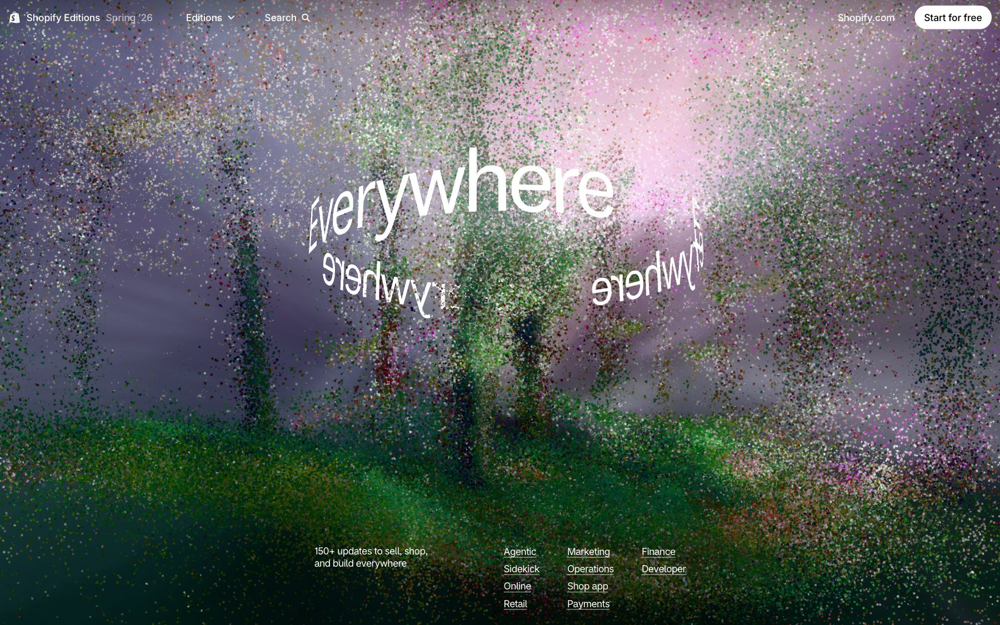
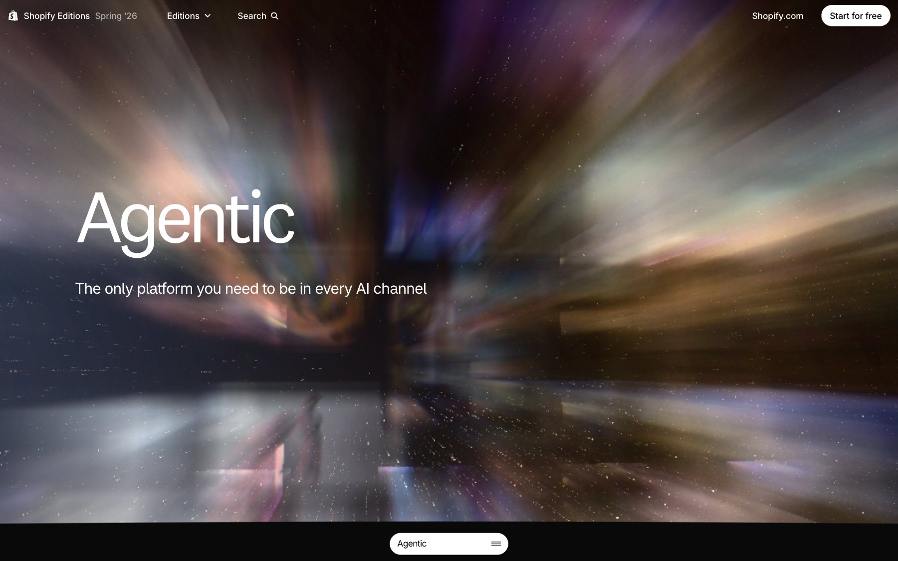
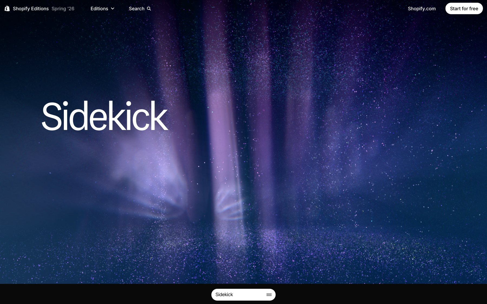
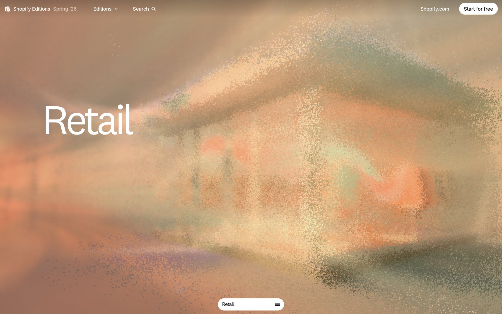
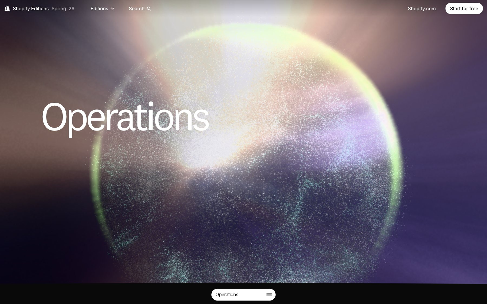
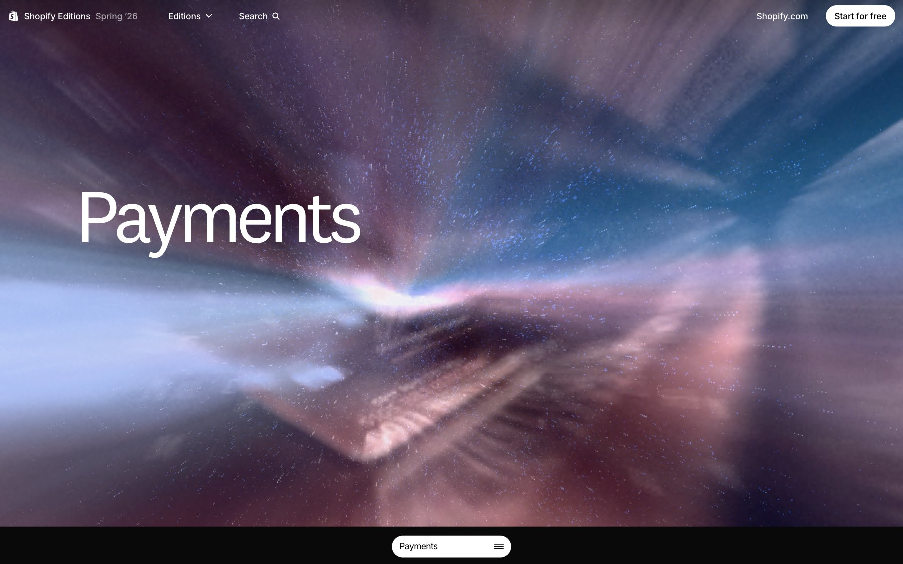
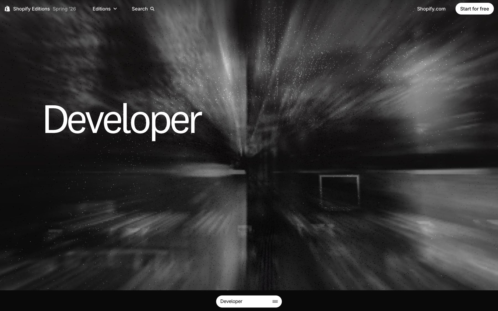
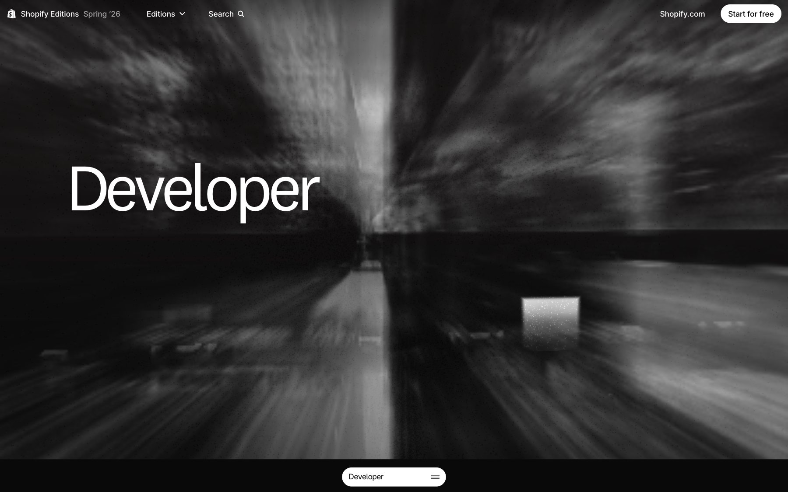
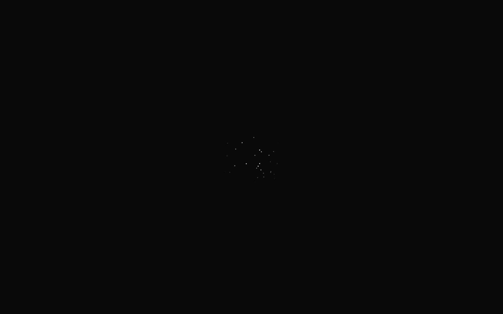
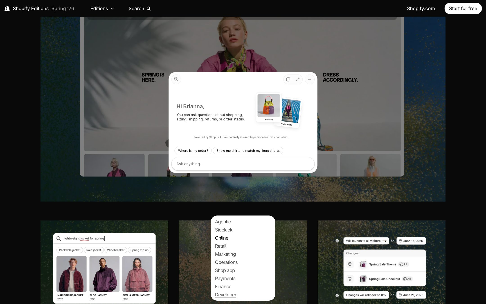
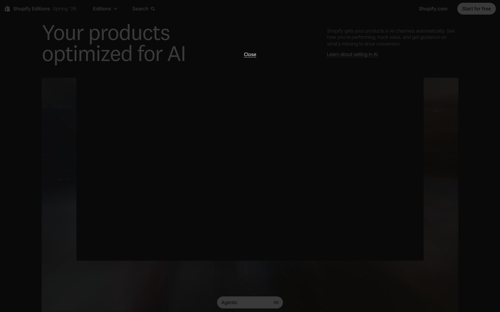
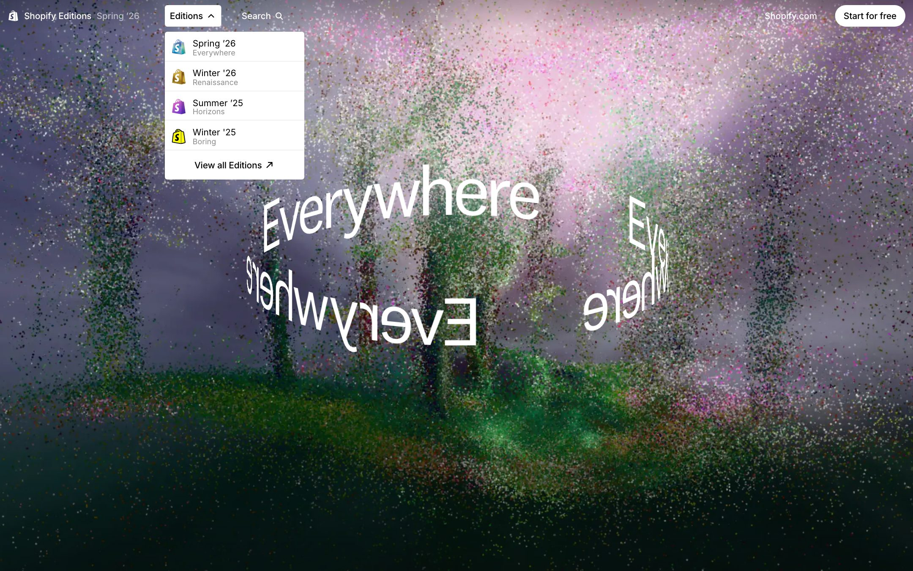
药丸（≥940px）：固定底部居中，宽 190px，闭合高 35px、圆角 17.5px、1px #0000001a 描边环、白底；摘要行显示当前章名与更新数。展开 grid-template-rows: 0fr → 1fr .24s cubic-bezier(.32,.72,0,1)，收起 .18s ease-out 延迟 90ms；十项以 34ms 倒序错位淡入，下划线 scale(0 1) → 1 .32s；壳体 .36s 出 .26s 收（--ease-snappy）。merch 面板打开时药丸隐藏。
复刻注意：0fr → 1fr 需要子元素 min-height: 0 加 overflow: hidden，否则内容会在收起时溢出。
卡片：无边框、无卡底，靠 grid-cols-subgrid 对齐标题与正文行，行距 44 / 40；纯文字卡组 48 / 64。标题带 link-underline（1px 底线，悬停变 3px 间距虚线并以 .6s link-march 行进）；媒体 aspect-4/3 → sm:aspect-video。knockout 卡（CMS 布尔）加入 LayerKnockoutPass，让三维层与 DOM 媒体互相挖空合成（机制实锤，效果为推断）。
视频：每条媒体给 mov、webm、mp4（av01 / hvc1 / avc1）三格式五路 source，按 (max-width: 767px) 与 (min-width: 768px) 双档、桌面 W500/W1000/W1250/W2500、手机 W720/W1440 宽档；preload=metadata，视口外移除 <source> 并 load() 卸载；播放键 48 → 80px，环与箭头 .7s cubic-bezier(.215,.61,.355,1)，意图延迟 .15s；灯箱走 View Transitions（video-container 旧 contain 新 cover）。
Rive：Retail 的 POS 演示 u28_pos_6_15_v3.riv，状态机 State Machine 1，四个触发 goToAddProduct / goToAddDiscount / goToAddCustomer / goToSplitPayment，配 4 张兜底图；平板模型 Tablet_Simplified_v3_silver5.glb，材质 metalness .55 roughness .61 envMap .4。
Merch：Retail 场景按钮「Get the Everywhere Cap」打开面板：perspective 900px，卡 rotateY(−90deg) translate(18px) scale(.98) 到位 .56s、媒体 .46s 延迟 .12s、四段文案 .15/.19/.24/.285s；价格来自 Storefront，加购走 https://{store}/cart/{variantId}:{qty}；场景切到黑白的 merch 预设。
沿用 Winter ’26 的双窗装置思路，但换成一辆车。Developer 场景里有一块 1.65×.92 的门户平面（位置 (.8, −.2, 1.2)，缩放 .7），着色器画 #adf0ff 的柔边框、1.2Hz 脉冲、噪声呼吸；悬停变实心，鼠标变手形。
window.open('/editions/spring2026/drive', 'spring_car_popup')，弹窗尺寸 min(vw, vh) × .424、4:3、边距 24px、居中于点击点；URL 带 drive-scene、drive-section、drive-session。canvas.captureStream(60) 通过 WebRTC 把画面推给弹窗（信令走 BroadcastChannel spring-webrtc-signaling，STUN stun.l.google.com:19302）。spring-popup-sync 定义 12 种消息：CANVAS_RECT、MAIN_WINDOW、ACTIVE_SECTION、POPUP_POSITION、POPUP_CENTER、POPUP_CLOSED、WHEEL_EVENT、NAVIGATE_TO_SECTION、WEBRTC_READY、DRIVE_STATE、DRIVE_SCENE_REVEAL、KEY_ANIMATED_OUT。DRIVE_STATE（速度、最大速度、视线 x、时间倍率、镜头偏移、速度线设置）；主窗按速度开启 ScrollerSpeedLinesEffect（阈值 .08）、把场景时间倍率拨到 −8 到 12（750ms 无消息复位）、用视线偏移外部指针，并以 700ms 揭示、760ms 退出把 Developer 场景切到 race-track 预设（fov 70、移动 fov 75）。driveEasterEggEnabled: true、easterEggKillswitch: false。本轮未打开弹窗实测。以上全部自源码读出。上一届 Winter ’26 的 /key 是以无头双窗完整走通并留下实录的，这一届没有——这是本次拆解相对上一届最明确的缺口，不掩饰。
#ssr-paint-cover（#090909），等 Tailwind 样式表从 media=print 换回 all 后再撕掉，1500ms / 8000ms 双兜底。sr-only 全文，拆字 span 全部 aria-hidden；hero 退场后整块 inert；forced-colors 与 prefers-reduced-motion 分别覆盖（前者关自绘图形，后者关运动，写成一条会让高对比度用户失去内容）；焦点环 #0062d3。--show-char-delay 递增 18ms、隐藏 9ms，通过 step-end 的 1ms 过渡实现；桌面入场延迟 2700ms，手机 1000ms。滚过 200px 的探针后 data-hero-exited，药丸导航从底部升起。[data-nav-trigger]（章标题）进入且无 [data-nav-transparent] 时导航转 isSolid；移动导航则简化为 scrollY > 0。animation-timeline: view() 加 @property 的 step-start 触发器让整站的滚动揭示不需要 IntersectionObserver。| 维度 | Winter ’26（Renaissance） | Spring ’26（Everywhere） |
|---|---|---|
| 底色 | 暖纸 #f7f7ee 与橄榄墨 #292919 | #090909 与白阶 |
| 字体 | NeueMontreal、HWCigars、ImperialScript | National2、ShopifyInter、Inter |
| 场景 | 多层 KTX2 图像平面立体书 | MDPC 点云 + 流体 + SDF |
| 编排 | Theatre.js（13 份 state） | Theatre.js（13 份 state） |
| 导航 | 达·芬奇手稿侧栏 + 罗马数字目录 | 底部药丸 + 逐字打字机 |
| 彩蛋 | /key 钥匙、锁孔、金币雨、涂鸦 | Developer 门户、/drive 赛车、速度线 |
| 商品 | Beanie（$14.52，罗马数字价签） | Everywhere Cap（3D 翻卡面板） |
本页数值来自：Playwright 计算样式探针（1440×900 @1.5x）；tailwind-vOc3OfBK.css（118,403 B）与 fonts-latin（716 B）；index.html（937,555 B，含内联 SSR 数据）；HTML 引用 85 个 JS chunk，下载并美化 32 个共 30,775 行逐行通读（其中 22 个来自那 85 个，另 10 个是路由清单按需加载的 popup / drive / RendererPipeline 等）；CMS loaderData、scenePresets、content、articles；13 份 Theatre 状态用 Python 解析；3 份 .mdpc 按格式头自行解析；两轮逐章截图。
| # | 没拿到什么 |
|---|---|
| 1 | JS 未全量读：85 个引用 chunk 读了 22 个，另读 10 个动态 chunk。未读的多为 three.js/r3f 运行时、通用组件与 polyfill；场景、转场、字环、彩蛋、分级、滚动六条主线均已覆盖。 |
| 2 | 彩蛋未实测：Developer 门户与 /drive 弹窗的跨窗 WebRTC 装置全部自源码读出，本轮未打开弹窗实跑。 |
| 3 | 点云只抽 3 份：13 份预设引用的 .mdpc 只落盘 3 份，用于验证格式头与体量；其余按 URL 记录未下载。 |
| 4 | KTX2 未解码：18 个帧纹理只记录 URL、命名与尺寸档，用途仍是推断。 |
| 5 | 软渲染截图：tier 3 一轮走 SwiftShader，只用于核验画面正确性，不用来评价帧率或流体的鼠标响应。 |
| 6 | 手机与真机未实测：mobileFov、移动端 tier 上限 1、手机视差均来自源码。 |
| 7 | Storefront 未下单：merch 面板的价格来源与加购 URL 自源码读出，未发起真实购买。 |
| 8 | 未启用外部研究通道：无奖项、访谈或制作团队信息核验。 |
核查中改正九处漂移，其中三处改变了结论的量级或性质：JS 精读规模（无出处的「102 个 chunk」→ 可复算的 85/32/22/10）、粒子数口径（源点数 vs 渲染上限）、流体六项参数区间（原区间取自部分预设）。全部留痕于《事实核查》。
设计解构 · 复刻指南 · 出处与方法 · 事实核查 · 设计评审 · tokens.json · design-tokens.css